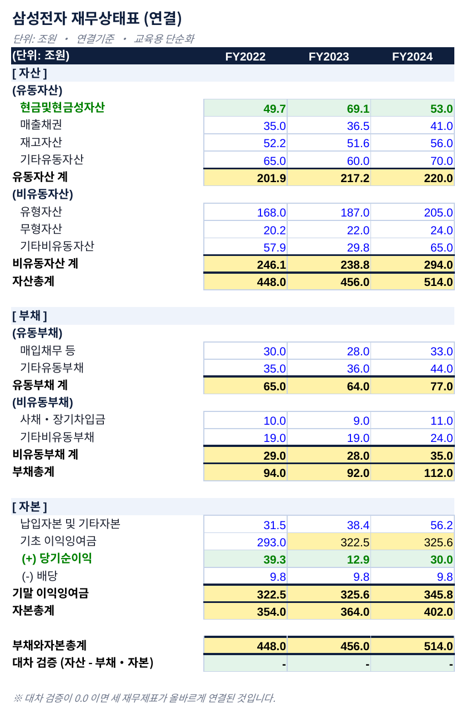
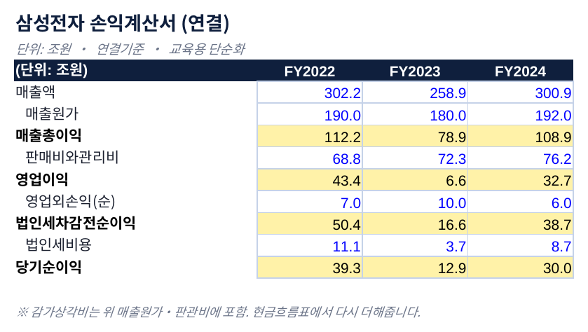
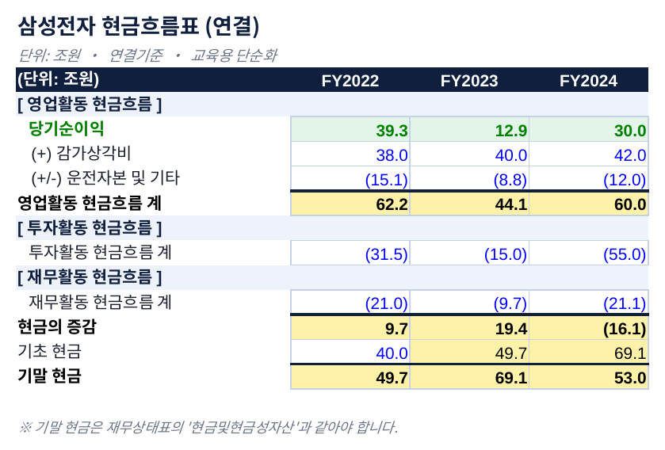
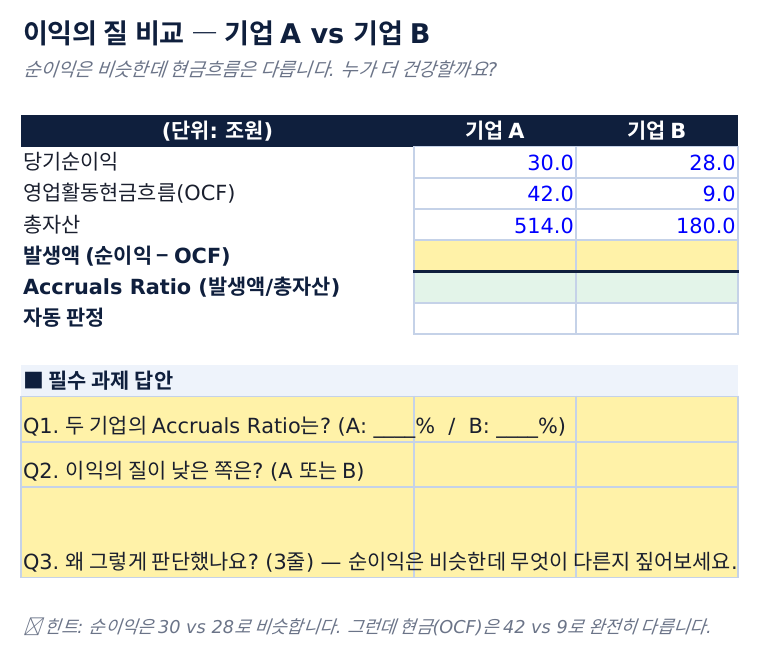
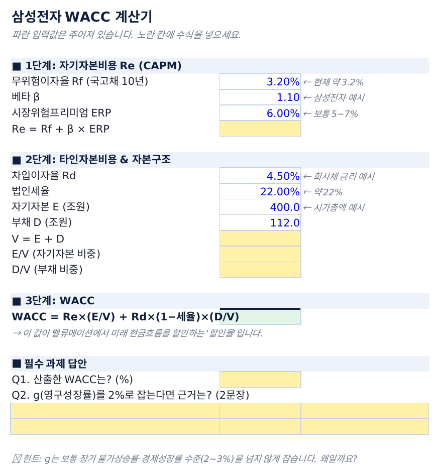
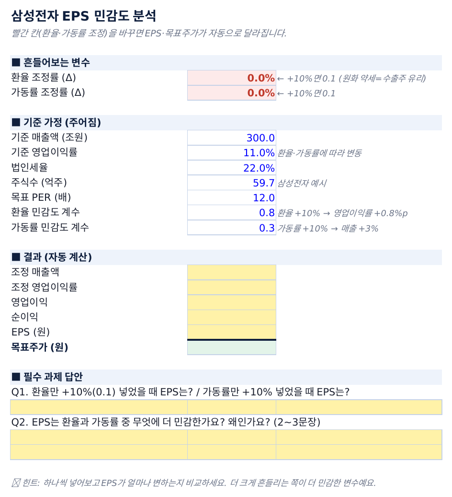

크림슨밸류는 고려대학교 세종캠퍼스의 정식 금융·투자 학회입니다. 2026-2학기부터 세종금융학회(SFA)와 통합해, 리서치·밸류에이션 실습부터 자격증 취득·취업 네트워크까지 아우르는 학회로 운영됩니다.
크림슨밸류(Crimson Value)는 크림슨브레인 산하 공식 인정 학회이자, 전국대학생투자동아리연합회(UIC) 충청지부 소속 가치투자·금융 학회입니다. 여름 연구회 형태로 시작해, 2026-2학기부터는 학기 중 오프라인 정규세션 체제로 전환합니다.
이번 학기부터는 세종금융학회(SFA)와 통합합니다. SFA가 계획하던 거시경제·산업 리서치가 크림슨밸류 커리큘럼과 중복되어, 두 학회 학회장·담당교수 협의를 거쳐 하나의 확대된 학회로 합쳐지게 되었습니다. 기존 크림슨밸류 회원과 SFA 회원 모두 동일한 절차로 2기에 재합류합니다.
핵심 포지셔닝은 "말이 아니라 결과물로 증명한다"입니다. 실제 기업 데이터를 다루는 워크시트 기반 실습으로 8주 만에 나만의 기업 리서치 리포트를 완성하는 것을 목표로 합니다.





